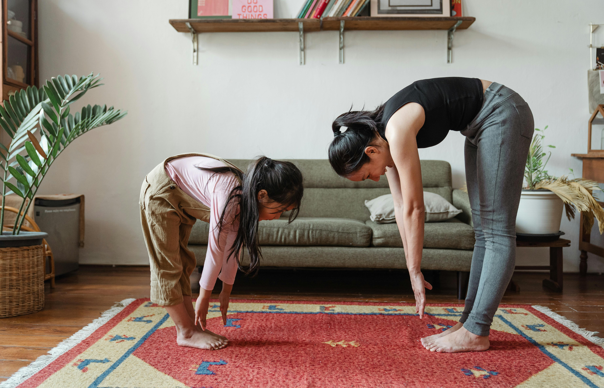

Dicas de Bem-Estar
Pratique a respiração profunda: Inspire lentamente pelo nariz por 4 segundos, segure por 7 segundos e expire pela boca por 8 segundos. Repita algumas vezes para acalmar o sistema nervoso.
Crie uma rotina relaxante antes de dormir. Evite telas (celular, TV) pelo menos uma hora antes de deitar. Um chá de camomila ou a leitura de um livro podem ajudar a sinalizar ao corpo que é hora de descansar.
Concentre-se em uma única tarefa de cada vez. Ao tomar um café, sinta o aroma, a temperatura e o sabor, sem distrações. Isso treina sua mente para estar presente no agora, reduzindo pensamentos acelerados.
Atividades Recomendadas
Meditação Guiada
Use aplicativos ou vídeos para guiar seus primeiros passos na meditação. Apenas 10 minutos por dia podem fazer uma grande diferença na sua clareza mental.

Exercício Físico Leve
Uma caminhada de 30 minutos ao ar livre pode liberar endorfinas, melhorar o humor e reduzir os níveis de estresse. O importante é movimentar o corpo.
Diário de Gratidão
Ao final do dia, anote três coisas pelas quais você é grato. Este simples hábito ajuda a focar nos aspectos positivos da vida, cultivando uma mentalidade otimista.